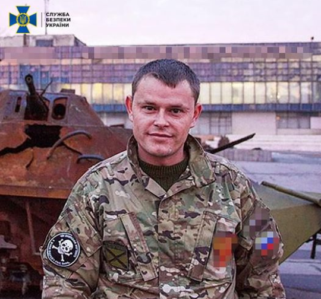

<div class="container-fluid">
  <div class="container">
    <div class="row">
      <div class="col-12 d-none d-lg-block">
        <div class="news-banner-settings">
          <div class="news-banner-img">
            
          </div>
          <div class="news-banner-header">
            Викритого контррозвідкою СБУ ватажка угруповання бойовиків оголошено
            у розшук<br /><br />
            <div class="news-banner-text">
              Служба безпеки України оголосила у розшук ватажка угруповання
              бойовиків так званої «ЛНР», який у 2014 році брав активну участь в
              організації захоплення будівлі Управління СБУ в Луганській
              області.<br /><br />Контррозвідка та слідчі української спецслужби
              встановили, що фігурант у 2014 році приєднався до незаконних
              збройних формувань. За даними слідства, зловмисник організовував
              «охорону» захопленого приміщення Управління СБУ в Луганській
              області та інструктував бойовиків щодо здійснення збройного опору
              учасникам антитерористичної операції.<br /><br />Також
              встановлено, що зловмисник створив та очолив угрупування так
              званий «15-й батальйон територіальної оборони «Брянка СССР», яке у
              період з 2014 до 2015 років брало участь у бойових діях проти
              українських військових підрозділів.<br /><br />Наразі фігурант
              переховується від правосуддя на тимчасово непідконтрольній
              українській владі території Луганської області. Слідчі СБУ заочно
              повідомили зловмиснику про підозру за ч. 1 ст. 258-3 (участь у
              терористичній групі чи терористичній організації) Кримінального
              кодексу України.<br /><br />У межах спеціального досудового
              розслідування тривають заходи щодо документування протиправної
              діяльності ватажка бойовиків та притягнення його до
              відповідальності.
            </div>
          </div>
        </div>
      </div>
      <div class="col-12 d-lg-none d-block">
        <div class="news-banner-header">
          Викритого контррозвідкою СБУ ватажка угруповання бойовиків оголошено у
          розшук<br /><br />
          <div class="news-banner-text">
            Служба безпеки України оголосила у розшук ватажка угруповання
            бойовиків так званої «ЛНР», який у 2014 році брав активну участь в
            організації захоплення будівлі Управління СБУ в Луганській
            області.<br /><br />Контррозвідка та слідчі української спецслужби
            встановили, що фігурант у 2014 році приєднався до незаконних
            збройних формувань. За даними слідства, зловмисник організовував
            «охорону» захопленого приміщення Управління СБУ в Луганській області
            та інструктував бойовиків щодо здійснення збройного опору учасникам
            антитерористичної операції.<br /><br />Також встановлено, що
            зловмисник створив та очолив угрупування так званий «15-й батальйон
            територіальної оборони «Брянка СССР», яке у період з 2014 до 2015
            років брало участь у бойових діях проти українських військових
            підрозділів.<br /><br />Наразі фігурант переховується від правосуддя
            на тимчасово непідконтрольній українській владі території Луганської
            області. Слідчі СБУ заочно повідомили зловмиснику про підозру за ч.
            1 ст. 258-3 (участь у терористичній групі чи терористичній
            організації) Кримінального кодексу України.<br /><br />У межах
            спеціального досудового розслідування тривають заходи щодо
            документування протиправної діяльності ватажка бойовиків та
            притягнення його до відповідальності.
          </div>
        </div>
      </div>
    </div>
  </div>
</div>
